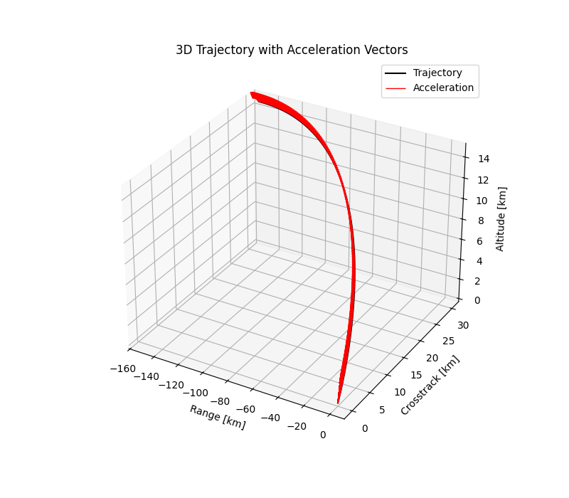

Deep Neural Network Pipeline for Trajectory Optimization
This work presents a deep neural network pipeline for trajectory optimization, focusing on the comparison and analysis of direct and indirect methods. Indirect methods based on optimal control theory often suffer from issues such as chattering and sensitivity to initial costate guesses. To address these challenges, Physics-Informed Neural Networks (PINNs) are employed to solve the coupled state-costate equations in a mesh-free manner. Modified activation functions are introduced to improve PINN convergence and accuracy. A comparative study of the low-thrust spacecraft (LTS) trajectory optimization problem is conducted using classical indirect methods and the proposed PINN-based approach. Through extensive hyperparameter and optimizer tuning, the PINN-based method achieves accuracy on the order of 10^-10. Furthermore, random-walk initialized PINNs are used to generate 100,000 high-accuracy state-control pairs, demonstrating the potential of the approach for generating training data and solving optimal control problems.
Trajectory Optimization, Deep Neural Networks, Physics-Informed Neural Networks, Optimal Control, State-Costate Equations, Indirect Methods
Introduction
Trajectory Optimization
Trajectory optimization is a branch of optimal control that focuses on finding the best possible trajectory, which is a time-parameterized path of states and control inputs, for a non-autonomous system to achieve a desired objective. The problem is formulated as an optimization task, where a cost function (also called a performance index) is minimized or maximized. This cost function can represent fuel consumption, time, energy, or any other measurable criterion critical to system performance.
The decision variables in trajectory optimization include the system’s states (such as position, velocity, or orientation) and control inputs (such as thrust, torque, or steering angle), which evolve over a defined time horizon. The system dynamics, governed by ordinary differential equations (ODEs), form the dynamic constraints, ensuring that the solution respects the laws of physics. Additionally, path constraints and boundary conditions restrict states and controls within safe or feasible bounds, such as actuator limits or desired final states.
The optimization problem is often solved numerically using either direct methods (for example, collocation or direct shooting), which discretize the trajectory, or indirect methods, which derive necessary conditions for optimality through the calculus of variations and solve the resulting two-point boundary value problem (TPBVP). The optimal control policy must be generated by satisfying all constraints and conditions that minimize the objective function.
General Trajectory Optimization Problem
Trajectory optimization problems can take various forms depending on the system’s nature and performance objectives. In this thesis, the focus is limited to continuous-time, single-phase problems where the system evolves smoothly without any discontinuities in its dynamics. Although more complex formulations, such as those involving multiple segments or hybrid systems with discrete transitions, they are outside the scope of this work.
A general trajectory optimization objective may comprise two components: a boundary term, represented by \(J(\cdot)\), which captures conditions at the initial and final time points, and an integral term, represented by \(w(\cdot)\), which accumulates cost over the entire trajectory duration. When both terms are included, the problem is said to be in Bolza form. If only the integral term is present, it is referred to as the Lagrange form, while a formulation with only the boundary term is known as the Mayer form.
The optimization is performed over a finite time interval, with time \(t \in [t_0, t_f]\), where \(t_0\) and \(t_f\) denote the initial and final times, respectively. The general objective function in Bolza form is expressed as:
\[ \min_{t_0, t_f, \mathbf{x}(t), \mathbf{u}(t)} J(t_0, t_f, \mathbf{x}(t_0), \mathbf{x}(t_f)) + \int_{t_0}^{t_f} w(\tau, \mathbf{x}(\tau), \mathbf{u}(\tau)) \, d\tau. \tag{1}\]
Here, the decision variables include the initial and final times \(t_0, t_f\), as well as the state trajectory \(\mathbf{x}(t)\) and the control trajectory \(\mathbf{u}(t)\). To ensure feasibility, various constraints are imposed on these variables.
System dynamics are defined as
\[ \dot{\mathbf{x}}(t) = \mathbf{f}(t, \mathbf{x}(t), \mathbf{u}(t)) \tag{2}\]
Path constraints restrict the trajectory within specified bounds:
\[ \mathbf{h}(t, \mathbf{x}(t), \mathbf{u}(t)) \leq 0 \tag{3}\]
Boundary constraints enforce conditions at the start and end points:
\[ \mathbf{g}(t_0, t_F, \mathbf{x}(t_0), \mathbf{x}(t_f)) \leq 0. \tag{4}\]
State, control, and time bounds ensure the solution lies within feasible ranges:
\[ \mathbf{x}_\text{low} \leq \mathbf{x}(t) \leq \mathbf{x}_\text{upp}, \quad \mathbf{u}_\text{low} \leq \mathbf{u}(t) \leq \mathbf{u}_\text{upp}, \quad t_\text{low} \leq t_0 < t_f \leq t_\text{upp}. \tag{5}\]
Initial and final state bounds specify limits at the boundaries:
\[ \mathbf{x}_{0,\text{low}} \leq \mathbf{x}(t_0) \leq \mathbf{x}_{0,\text{upp}}, \quad \mathbf{x}_{f,\text{low}} \leq \mathbf{x}(t_f) \leq \mathbf{x}_{f,\text{upp}}. \tag{6}\]
This formulation is suitable for single-phase, continuous-time problems, focusing on cases expressed in Lagrange form, where only the integral term is present in the objective function.
Modes of Trajectory Optimization
Trajectory optimization problems can be addressed in two primary modes: offline and online. In the offline mode, the trajectory is computed before the actual operation of the system, under the assumption of complete knowledge of the system dynamics, environment, and control model. This mode enables complex and accurate optimization, often with high computational resources. However, it lacks adaptability and becomes suboptimal when unexpected changes or uncertainties occur during operation.
The online mode, in contrast, refers to computing or updating the trajectory in real time during the system’s operation. This is particularly important in the presence of uncertainties, which may arise from disturbances in the environment, inaccuracies in the system model, or unmodeled control behavior. Due to the need for rapid computation, online algorithms prioritize responsiveness over absolute accuracy.
Since offline and online modes each offer distinct advantages and limitations, a hybrid approach is often employed. In this mode, an initial trajectory is generated offline based on nominal conditions and later refined online using real-time state feedback. This allows for a balance between computational efficiency and adaptability. Deep Neural Networks (DNNs) are commonly used in such frameworks due to their ability to generalize from offline training data and adapt quickly during online execution.
In real-world scenarios, relying solely on precomputed offline trajectories without incorporating state feedback can result in degraded performance under uncertainty. Online trajectory optimization compensates for these deviations by continuously adjusting control inputs based on the actual system state. Specifically, it aims to compute the optimal control given the current state, thereby enhancing robustness and ensuring the system operates effectively in dynamic environments. The general structure of such algorithms is illustrated in Figure 1.


Looking at aerospace applications, and in particular, retro-propulsive launch vehicle landing and reaction wheel spacecraft attitude control, the uncertainties are unavoidable because of the complexity of the underlying systems and the diversity of the environments under which these systems operate.
Algorithms
Keeping in mind the diverse applications of trajectory optimization, and the conflicting requirements of accuracy and speed, a variety of algorithms have been developed to solve the trajectory optimization problem. These algorithms can be broadly classified into two categories: direct and indirect methods.
In trajectory optimization, direct methods are commonly used to convert continuous-time problems into nonlinear programming problems. Approaches like shooting methods, Hermite-Simpson collocation, and pseudospectral methods differ in how they handle dynamics and discretization. While shooting methods can struggle with stability over long horizons, collocation and pseudospectral methods offer improved robustness.
However, the indirect method requires solving a TPBVPs for both the state and costate ODEs, which poses significant challenges due to the need for precise boundary conditions. This limitation highlights the potential of DNNs, which offer a robust alternative by directly solving these ODEs even with partial or incomplete boundary information, thereby simplifying the process and expanding the envelope of solvable problems at the expense of higher computing.
Deep Neural Networks
Machine Learning (ML) is a subset of artificial intelligence that focuses on enabling systems to learn and adapt from data without explicit programming. By leveraging algorithms to identify patterns and optimize representations of input data within a defined space, ML provides solutions to complex problems across various domains. The process is guided by feedback signals, enabling systems to refine their performance iteratively. This methodology has been successfully applied to challenging tasks such as speech recognition, autonomous navigation, and predictive modeling, demonstrating its ability to address specialized, data-driven challenges in diverse fields. A conceptual relationship among artificial intelligence, machine learning, and deep learning is illustrated in Figure 3.
The definition given by Prof. Tom Mitchell is: “A computer program is said to learn from experience \(E\) with respect to some task \(T\) and some performance measure \(P\), if its performance on \(T\), as measured by \(P\), improves with experience \(E\)” (Chollet 2021).

Deep learning is a specialized subfield of machine learning that focuses on learning hierarchical layers of representations from data. Unlike traditional machine learning approaches, which typically learn one or two layers of representations, deep learning involves multiple layers that progressively capture more meaningful features. These layers are learned automatically from training data, and the depth of the model refers to the number of layers. Modern deep learning models, often implemented using neural networks, can have tens or even hundreds of layers. Despite the term “neural network” being inspired by neurobiology, deep learning models are not directly related to the brain’s structure or learning mechanisms. Instead, they serve as mathematical frameworks for learning complex representations from data. A typical architecture of a DNN is shown in Figure 4, illustrating how layers of neurons are stacked to form the model.

Since this thesis spans the complete development and application of various trajectory optimization techniques, ranging from classical numerical methods to modern deep learning approaches, literature reviews are integrated contextually at the beginning of each relevant chapter. For instance, Chapter 2 reviews traditional direct and indirect methods used in trajectory optimization, while Chapter 3 explores recent advances in Physics-Informed Neural Networks (PINNs) for solving optimal control problems. Chapter 4 introduces the Theory of Functional Connections (TFC), preceded by a review of boundary value problem-solving methods. Each of these reviews is presented just before the core technical content to ensure clarity and relevance.
The following section outlines the structure of the thesis and summarizes the contributions made in each chapter. This overview is intended to guide the reader through the logical flow of the work and emphasize the novel aspects of the research.
Outline of the Thesis
Chapter 2 presents a comprehensive review of both direct and indirect methods for solving trajectory optimization problems. It begins with discretization techniques such as the trapezoidal and Hermite–Simpson methods, which are applied to the Linear Tangent Steering (LTS) problem. The chapter also examines the use of regularization strategies to suppress chattering in control signals. Limitations of direct methods are discussed, followed by a theoretical introduction to indirect approaches based on the Pontryagin Maximum Principle.
Chapter 3 focuses on the application of Physics-Informed Neural Networks (PINNs) for solving optimal control problems. It details the structure and training of PINNs, emphasizing their capability to simultaneously learn both state and costate trajectories. The performance of various activation functions, particularly the Rowdy Adaptive Activation Function (RAAF), is assessed. Additionally, techniques such as weight initialization and interpolation are explored to improve training stability and convergence.
Chapter 4 introduces the Theory of Functional Connections (TFC) as a powerful method for solving boundary value problems in trajectory optimization. The mathematical foundations of TFC are presented, and its application to problems such as energy-optimal planetary landing is demonstrated. The chapter highlights TFC’s ability to analytically satisfy boundary conditions and handle state and control constraints with high accuracy.
Finally, Chapter 5 summarizes the key contributions of the thesis and compares classical numerical methods with learning-based approaches for trajectory optimization. The strengths and limitations of each method are discussed, along with potential directions for future work, including real-time implementation, adaptive control strategies, and hybrid frameworks that integrate physics-based models with data-driven techniques.
General Methods to Solve Trajectory Optimization Problem
During the course of this research, a thorough investigation of direct methods for optimal control is undertaken, with a focus on their formulation and application to dynamic systems. The effectiveness of these methods is critically assessed, followed by an exploration of potential enhancements to improve solution accuracy and computational efficiency. Specifically, the study examines various discretization schemes, such as the Trapezoidal and Hermite-Simpson methods, and investigates how modifications in the formulation, including the introduction of regularization terms, can reduce computational errors and yield more optimal trajectories.
Direct Method
Direct methods for solving optimal control problems (OCPs) involve transcribing the continuous-time problem into a finite-dimensional nonlinear programming problem (NLP). This is achieved by discretizing the time horizon and approximating both the system dynamics and the cost functional at discrete time points.
Several transcription techniques are used in direct methods, each differing in the way they discretize the dynamics and integrate the cost. This thesis considers two widely used collocation-based techniques: the Trapezoidal method and the Hermite–Simpson method. The Trapezoidal method is a second-order accurate scheme known for its simplicity, while the Hermite–Simpson method offers higher (third-order) accuracy by incorporating midpoint information through Hermite interpolation and Simpson’s integration rule.
The following subsections describe these methods in detail.
Trapezoidal Method
The trapezoidal method is a collocation-based discretization scheme that approximates the dynamics of the system using a second-order accurate rule. It converts the continuous-time OCPs into an NLP by enforcing dynamic constraints at discrete time intervals.
As introduced in Chapter 1, we consider a OCP with a Lagrange-type cost functional:
\[ \min_{\mathbf{x}(t), \mathbf{u}(t)} \int_{t_0}^{t_f} w(\mathbf{x}(t), \mathbf{u}(t), t) \, dt, \tag{7}\]
To solve this problem using direct transcription, we apply the trapezoidal method to discretize both the objective and the dynamics over a uniform time grid. The time interval \([t_0, t_f]\) is divided into \(N\) segments, with grid points \(t_0, t_1, \ldots, t_N\), where \(\Delta t = \frac{t_f - t_0}{N}\) and \(t_k = t_0 + k \Delta t\).
The integral cost functional is approximated as:
\[ \min_{\{\mathbf{x}_k, \mathbf{u}_k\}} \sum_{k=0}^{N-1} w(\mathbf{x}_k, \mathbf{u}_k, t_k) \Delta t. \tag{8}\]
The system dynamics are enforced using the trapezoidal rule, resulting in the collocation constraint:
\[ \mathbf{x}_{k+1} - \mathbf{x}_k - \frac{\Delta t}{2} \left[ \mathbf{f}(\mathbf{x}_k, \mathbf{u}_k, t_k) + \mathbf{f}(\mathbf{x}_{k+1}, \mathbf{u}_{k+1}, t_{k+1}) \right] = 0 \tag{9}\]
This discretized optimization problem is also subject to the following constraints:
\[ \mathbf{x}_0 = \mathbf{x}(t_0), \quad \mathbf{x}_N = \mathbf{x}(t_f) \tag{10}\]
\[ \mathbf{h}(\mathbf{x}_k, \mathbf{u}_k, t_k) \leq \mathbf{0}, \quad \text{for } k = 0, \dots, N-1 \tag{11}\]
\[ \mathbf{u}_{\min} \leq \mathbf{u}_k \leq \mathbf{u}_{\max}, \quad \mathbf{x}_{\min} \leq \mathbf{x}_k \leq \mathbf{x}_{\max} \tag{12}\]
The result is a finite-dimensional NLP that can be efficiently solved using standard numerical optimization techniques, where the decision variables are the discretized state and control trajectories \(\{ \mathbf{x}_k, \mathbf{u}_k \}\).
Hermite–Simpson Method
The Hermite–Simpson (H-S) method is a third-order accurate direct collocation scheme used for solving OCPs. It combines Hermite interpolation and Simpson’s rule to discretize both the dynamics and the cost functional over a uniform time grid, allowing better approximation of the system behavior between nodes.
We consider a continuous-time OCP with a Lagrange-type cost functional:
\[ \min_{\mathbf{x}(t), \mathbf{u}(t)} \int_{t_0}^{t_f} w(\mathbf{x}(t), \mathbf{u}(t), t) \, dt, \tag{13}\]
The time interval \([t_0, t_f]\) is divided into \(N\) uniform segments with grid points \(t_0, t_1, \ldots, t_N\), and step size \(\Delta t = \frac{t_f - t_0}{N}\). Midpoints are defined as \(t_m = \frac{t_k + t_{k+1}}{2}\).
Using Simpson’s rule, the discretized cost functional becomes:
\[ \min_{\{\mathbf{x}_k, \mathbf{u}_k\}} \sum_{k=0}^{N-1} \frac{\Delta t}{6} \left[ w(\mathbf{x}_k, \mathbf{u}_k, t_k) + 4 w(\mathbf{x}_m, \mathbf{u}_m, t_m) + w(\mathbf{x}_{k+1}, \mathbf{u}_{k+1}, t_{k+1}) \right] \tag{14}\]
where \(\mathbf{x}_m\) and \(\mathbf{u}_m\) are midpoint estimates between \(t_k\) and \(t_{k+1}\).
The system dynamics are enforced using the H-S collocation constraint:
\[ \mathbf{x}_{k+1} = \mathbf{x}_k + \frac{\Delta t}{6} \left[ \mathbf{f}(\mathbf{x}_k, \mathbf{u}_k) + 4 \mathbf{f}(\mathbf{x}_m, \mathbf{u}_m) + \mathbf{f}(\mathbf{x}_{k+1}, \mathbf{u}_{k+1}) \right] \tag{15}\]
The midpoint state \(\mathbf{x}_m\) is approximated as:
\[ \mathbf{x}_m = \frac{1}{2}(\mathbf{x}_k + \mathbf{x}_{k+1}) + \frac{\Delta t}{8} \left[ \mathbf{f}(\mathbf{x}_k, \mathbf{u}_k) - \mathbf{f}(\mathbf{x}_{k+1}, \mathbf{u}_{k+1}) \right] \tag{16}\]
The full H-S transcription includes the following constraints:
\[ \mathbf{x}_0 = \mathbf{x}(t_0), \quad \mathbf{x}_N = \mathbf{x}(t_f) \tag{17}\]
\[ \mathbf{h}(\mathbf{x}_k, \mathbf{u}_k) \leq \mathbf{0}, \quad \text{for } k = 0, \dots, N \tag{18}\]
\[ \mathbf{u}_{\min} \leq \mathbf{u}_k \leq \mathbf{u}_{\max}, \quad \mathbf{x}_{\min} \leq \mathbf{x}_k \leq \mathbf{x}_{\max} \tag{19}\]
The H-S method achieves higher-order accuracy compared to lower-order schemes like the trapezoidal method by incorporating interpolated midpoints in both the cost and dynamic constraints. This enhanced accuracy makes it especially effective in problems with nonlinear or rapidly varying dynamics.
Linear Tangent Steering Problem
The Linear Tangent Steering (LTS) problem (Bryson 2018) is a classical optimal control problem that involves steering a system governed by nonlinear dynamics to a specified final state while minimizing the total control time. It serves as a standard benchmark for testing the performance of numerical optimization techniques.
The objective is to minimize the total time \(t_f\) required to reach a desired final position from a given initial condition:
\[ J = \int_0^{t_f} 1 \, dt = t_f \tag{20}\]
Dynamic Constraints
The system is defined by four states: \(x_1\) and \(x_2\) (position components), and \(x_3\), \(x_4\) (velocity components). The dynamics are governed by the following equations:
\[ \begin{aligned} \dot{x}_1 &= x_3, \\ \dot{x}_2 &= x_4, \\ \dot{x}_3 &= a \cos u, \\ \dot{x}_4 &= a \sin u, \end{aligned} \tag{21}\]
where \(a\) is a constant acceleration magnitude, and \(u(t)\) is the control input representing the steering angle.
Boundary Conditions
The problem is subject to the following initial and terminal boundary conditions:
\[ \begin{aligned} x_1(0) &= 0, &\quad x_1(t_f) &= \text{free}, \\ x_2(0) &= 0, &\quad x_2(t_f) &= 5, \\ x_3(0) &= 0, &\quad x_3(t_f) &= 45, \\ x_4(0) &= 0, &\quad x_4(t_f) &= 0. \end{aligned} \tag{22}\]
The analytical solution to this problem is obtained by solving the necessary conditions of optimality, derived using the Pontryagin Maximum Principle (PMP). These conditions include the state and costate dynamics as well as transversality conditions and yield an exact trajectory that satisfies all constraints.
Figure 5 shows the analytical solution for the state variables and control input over the optimal trajectory. The optimized final time is found to be \(t_f = 0.5546 \, \text{s}\), which serves as a benchmark for evaluating numerical methods.


This analytical solution, derived without numerical approximations, provides a valuable reference for assessing the accuracy and convergence of transcription-based methods such as the Hermite–Simpson method. For detailed derivations and analytical formulations, refer to (Bryson 2018).
While the analytical solution offers exact results for this benchmark problem, it is not always feasible for more complex systems or constraints. Therefore, a numerical optimization approach is employed to approximate the optimal trajectory using transcription techniques, which can be generalized to a broader class of problems.
Numerical Optimization Setup
To numerically solve the LTS problem, the continuous-time optimal control problem is transcribed into a finite-dimensional NLP problem using direct collocation methods. The resulting NLP is solved using the Sequential Least Squares Quadratic Programming (SLSQP) algorithm, implemented via the scipy.optimize.minimize function in Python.
The optimization procedure minimizes the cost functional while ensuring that the discretized dynamics, boundary conditions, and path constraints are satisfied at all collocation points. The discretized design variables of state vectors, control inputs, and the final time \(t_f\) across \(N+1\) nodes is given below:
\[ \left[ \tilde{\mathbf{x}}_1,\, \tilde{\mathbf{x}}_2,\, \tilde{\mathbf{x}}_3,\, \tilde{\mathbf{x}}_4,\, \tilde{\mathbf{u}},\, t_f \right] \tag{23}\]
Here \(\tilde{\mathbf{x}}_1\) represents the discretized \(\mathbf{x_1}\), and the same applies for the other variables.
Initial Guess: A well-chosen initial guess is essential to ensure the convergence of gradient-based optimization algorithms, particularly in problems involving nonlinear dynamics and constraints. The initial guess vector is constructed by concatenating the discretized design variables are given as below:
\[ \text{Initial Guess} = \begin{cases} \text{Linearly interpolated over the interval } [0, 5] & \text{for } \tilde{\mathbf{x}}_1,\, \tilde{\mathbf{x}}_2, \\ \text{Linearly spaced from } 0 \text{ to } 45 & \text{for } \tilde{\mathbf{x}}_3, \\ 0 & \text{for } \tilde{\mathbf{x}}_4, \\ \text{Linearly spaced from } -1 \text{ to } 1 & \text{for } \tilde{\mathbf{u}}, \\ 1.0 & \text{for } t_f. \end{cases} \tag{24}\]
Bounds: To ensure that the optimization remains within feasible and physically meaningful limits, bounds are imposed on the decision variables:
\[ \text{bounds} = \begin{cases} [0, \infty) & \text{for } \tilde{\mathbf{x}}_1, \tilde{\mathbf{x}}_2, \tilde{\mathbf{x}}_3, t_f, \\ (-\infty, \infty) & \text{for } \mathbf{\tilde{x}}_4, \\ [-1.1, 1.1] & \text{for } \mathbf{\tilde{u}}. \end{cases} \tag{25}\]
These bounds ensure, for example, that horizontal positions and velocities remain non-negative, while vertical velocities are unrestricted. The control inputs are slightly relaxed beyond the actual bounds \([-1, 1]\) to improve solver robustness and prevent premature clipping due to numerical rounding.
Solver Settings: The optimization solver is configured with specific parameters to ensure robust and accurate convergence. The SLSQP (Sequential Least Squares Quadratic Programming) algorithm is employed as the optimization method. A high maximum iteration limit is set via maxiter=10000, providing ample opportunity for convergence. The gradient tolerance is configured with gtol=1e-10, ensuring that the solution satisfies the first-order optimality condition with high precision. Additionally, disp=True enables real-time display of the solver’s progress and convergence messages. These settings collectively help balance computational cost and accuracy, which is crucial for problems involving sensitive dynamic constraints and tight boundary conditions.
Solution using Trapezoidal Method
Following the numerical setup, the transcribed NLP is solved using the trapezoidal collocation method. The solver returns the optimal control \(\tilde{\mathbf{u}}\), the corresponding state trajectories \(\tilde{\mathbf{x}}_1, \tilde{\mathbf{x}}_2, \tilde{\mathbf{x}}_3, \tilde{\mathbf{x}}_4\), and the optimal final time \(t_f\).
The results obtained are compared against the analytical solution to evaluate the performance of the trapezoidal method. Figure 6 shows the control and state trajectories computed using the trapezoidal method.
The optimal control law in the LTS problem has a smooth bang-bang structure, featuring smooth transitions between maximum and minimum control values. However, the trapezoidal method fails to accurately capture these transitions, leading to artificial oscillations known as chattering. This effect is clearly visible in Figure 6 (b), where the control input fluctuates excessively around the expected switching points.


To quantify the numerical error, the Mean Squared Error (MSE) between the trapezoidal and analytical solutions is computed for each state variable and the control input. Let \(x^{\text{num}}(t)\) and \(x^{\text{ref}}(t)\) represent the numerical and analytical solutions, respectively. Then,
\[ \text{MSE}(x_i) = \frac{1}{N+1} \sum_{k=0}^{N} \left( x_{i,k}^{\text{num}} - x_{i,k}^{\text{ref}} \right)^2 \tag{26}\]
| Quantity | Value |
|---|---|
| \(\text{MSE}(x_1)\) | \(7.8471 \times 10^{-2}\) |
| \(\text{MSE}(x_2)\) | \(3.5940 \times 10^{-3}\) |
| \(\text{MSE}(x_3)\) | \(3.0631 \times 10^{-1}\) |
| \(\text{MSE}(x_4)\) | \(5.3473 \times 10^{-1}\) |
| \(\text{MSE}(u)\) | \(2.3736 \times 10^{2}\) |
| \(t_f^{\text{num}}\) | \(0.56822 \, \text{s}\) |
| \(\varepsilon_{t_f}\) | \(1.3653 \times 10^{-2} \, \text{s}\) |
While the state and control trajectories broadly follow the expected profiles, the noticeable discrepancies, particularly in the control input, highlight the limitations of the trapezoidal method.
To address these limitations, the next section introduces the H-S method offers significantly improved accuracy. This higher-order method is better suited for resolving discontinuities in optimal control problems, including those with bang-bang control structures.
Solution using Hermite–Simpson Method
To improve the accuracy and reduce the numerical artifacts observed with the trapezoidal method, the same trajectory optimization problem is now solved using the Hermite–Simpson collocation method. This third-order scheme incorporates midpoint information to more accurately approximate the system dynamics and cost function.
The optimization setup, including variable initialization, bounds, and solver configuration, remains consistent with the previous method. The numerical solution returns the optimized state trajectories \(\tilde{\mathbf{x}}_1, \tilde{\mathbf{x}}_2, \tilde{\mathbf{x}}_3, \tilde{\mathbf{x}}_4\), the control input \(\tilde{\mathbf{u}}\), and the final time \(t_f\).
Figure 7 presents the computed state and control trajectories. The left panel (Figure 7 (a)) shows the state variables, while the right panel (Figure 7 (b)) displays the control input profile.
Despite using a higher-order collocation method, the control input \(\tilde{\mathbf{u}}\) still exhibits noticeable chattering, as seen in Figure 7 (b). This behavior stems from the nature of the optimal control law in this problem, which is a smooth bang-bang type. The smooth transitions between maximum and minimum control values pose challenges for numerical methods based on polynomial approximations, even those of higher order.
The persistence of chattering highlights a fundamental limitation in transcription-based methods: the inability to exactly represent the control signal. The H-S method captures the overall control structure more accurately than the trapezoidal method, but still struggles to eliminate chattering completely.


Similar to last method, MSE is computed for each state variable and the control input and, error in the final time.
| Quantity | Value |
|---|---|
| \(\text{MSE}(x_1)\) | \(3.6200 \times 10^{-3}\) |
| \(\text{MSE}(x_2)\) | \(1.9110 \times 10^{-3}\) |
| \(\text{MSE}(x_3)\) | \(8.6762 \times 10^{-2}\) |
| \(\text{MSE}(x_4)\) | \(4.5058 \times 10^{-1}\) |
| \(\text{MSE}(u)\) | \(1.6727 \times 10^{2}\) |
| \(t_f^{\text{num}}\) | \(0.5617 \, \text{s}\) |
| \(\varepsilon_{t_f}\) | \(7.1137 \times 10^{-3} \, \text{s}\) |
To alleviate this issue and promote smoother control profiles, a regularization term can be added to the cost functional. This term penalizes the rate of change in the control input and helps suppress high-frequency oscillations, thereby improving numerical stability and producing more realistic control behavior.
Regularization Methods
To promote smoother control profiles and mitigate undesirable oscillations (chattering) in control inputs, a regularization term (Sánchez-Sánchez et al. 2016) is often added to the objective function. This term penalizes large variations in the control trajectory by discouraging abrupt changes in the derivative of the control vector \(\mathbf{\tilde{u}}\). Such an approach is particularly useful in trajectory optimization problems, where noisy or highly oscillatory controls can be both unrealistic and numerically unstable.
The regularization cost is computed using a second-order finite difference approximation of the first derivative of the control input. Note that the time step \(\Delta t\) is omitted from the formulation.
Regularization Term
A central difference approximation is used for all interior nodes \(i = 0, \dots, N\):
\[ R(\mathbf{\tilde{u}}) = \sum_{i=0}^{N} \left( \frac{\mathbf{{u}}_{i+1} - \mathbf{u}_{i-1}}{2} \right)^2 \tag{27}\]
Boundary Approximations
At the boundaries where central differences are not applicable, second-order forward and backward differences are used:
\[ \text{First Point } (i = 0): \quad \left( \frac{-3\mathbf{u}_0 + 4\mathbf{u}_1 - \mathbf{u}_2}{2} \right)^2 \tag{28}\]
\[ \text{Last Point } (i = N): \quad \left( \frac{3\mathbf{u}_{N} - 4\mathbf{u}_N + \mathbf{u}_{N-1}}{2} \right)^2 \tag{29}\]
Regularized Objective Function
The modified objective function incorporating the regularization term is:
\[ J' = J + \beta R(\mathbf{\tilde{u}}) \tag{30}\]
where \(J\) is the original objective function (e.g., final time or control effort), \(R(\mathbf{\tilde{u}})\) is the regularization term, and \(\beta\) is a user-defined weighting parameter that balances optimality and smoothness.
Including this regularization term reduces high-frequency content in the control signal \(\mathbf{u}\), thereby suppressing chattering and enhancing the numerical stability and physical plausibility of the computed solution.
Application of Regularization Term to LTS Problem
To enhance the smoothness of the control input in the LTS (LTS) problem, a regularization term \(J_{\text{reg}}\) is added to the objective function. This penalizes abrupt variations in the control trajectory \(\mathbf{\tilde{u}}\), reducing high-frequency oscillations and producing a more realistic control profile.
The modified objective function is defined as:
\[ J' = t_f + \beta \, R(\mathbf{\tilde{u}}), \tag{31}\]
where \(t_f\) denotes the final time, and \(\beta = 10^{-5}\) is the regularization parameter. The term \(\mathbf{\tilde{u}}\) represents the discretized control inputs. The discretization step \(\Delta t\) is omitted in the formulation, as it is effectively absorbed into the regularization weight \(\beta\). Based on findings in the literature~(Sánchez-Sánchez et al. 2016), a value of \(\beta = 10^{-5}\) has been shown to effectively suppress chattering in the control signal.
Effect of Regularization Weight and Optimizer Choice
To improve control smoothness in the LTS problem, both the regularization weight \(\beta\) and the choice of optimization algorithm were evaluated. The H-S collocation method was used with different values of \(\beta\), keeping the overall numerical setup unchanged.


As shown in Figure 8(a), increasing the regularization weight \(\beta\) results in progressively smoother control trajectories. The regularization term penalizes large variations in the control input and helps suppress chattering, although some high-frequency artifacts persist due to the underlying bang-bang nature of the optimal solution. This highlights the difficulty of approximating discontinuous control laws using smooth polynomial-based collocation methods alone.
As shown in Figure 8(b), the use of different \(\beta\) values with the trust-region method results in smoother control profiles. Although slight variations can be observed near the boundaries, the control profile corresponding to \(\beta = 10^{-5}\) aligns almost perfectly with the analytical solution, making it the most suitable choice for this problem.
Unlike some solvers like SLSQP, which can get stuck in poor local minima, the trust-region method is more effective at exploring the entire solution space. It avoids premature convergence and increases the chances of finding better, or even globally optimal, solutions. This makes it particularly suitable for problems like the LTS, which involve sharp control transitions and complex dynamics.
When combined with the H-S method and an appropriate regularization term, the trust-region method results in smoother and more accurate trajectories. The final optimized states and control are shown in Figure 9. The improved solution exhibits reduced numerical artifacts, excellent stability, and a closer match to the ideal bang-bang structure.


| Quantity | Value |
|---|---|
| \(\text{MSE}(x_1)\) | \(1.0000 \times 10^{-6}\) |
| \(\text{MSE}(x_2)\) | \(1.7240 \times 10^{-3}\) |
| \(\text{MSE}(x_3)\) | \(3.1893 \times 10^{-3}\) |
| \(\text{MSE}(x_4)\) | \(8.3461 \times 10^{-3}\) |
| \(\text{MSE}(\mathbf{\tilde{u}})\) | \(4.3790 \times 10^{-3}\) |
| \(t_f^{*}\) | \(0.5546 \, \text{s}\) |
| \(\varepsilon_{t_f}\) | \(4.8597 \times 10^{-5} \, \text{s}\) |
These results confirm that the combined use of regularization and the trust-region method significantly improves both the smoothness and the numerical accuracy of the computed control and state trajectories.
Limitations of Direct Methods
Direct methods, especially when enhanced with regularization and robust optimizers, offer practical and reliable solutions for complex trajectory optimization problems. However, they have inherent limitations. Direct transcription approximates state and control trajectories numerically, which can lead to accuracy loss near discontinuities such as bang-bang switches (Sánchez-Sánchez and Izzo 2018). Moreover, direct methods do not explicitly expose the necessary conditions for optimality, limiting analytical insight.
Direct collocation methods, such as the Hermite-Simpson scheme discussed previously, improve stability by enforcing dynamics at multiple points but may require dense discretization to achieve high accuracy, increasing computational cost (Rao 2010).
These limitations motivate the use of indirect methods, which solve the optimal control problem by directly enforcing the necessary conditions derived from PMP (Bryson 2018). Indirect methods can provide higher accuracy near discontinuities and offer deeper analytical understanding of the solution structure.
Indirect Method
The indirect method for solving trajectory optimization problems is grounded in optimal control theory, particularly the calculus of variations and Pontryagin’s Maximum Principle (PMP) (Sánchez-Sánchez and Izzo 2018). This approach transforms the trajectory optimization problem into a boundary value problem (BVP) by deriving necessary conditions for optimality.
Formulation of the Problem
Consider a general trajectory optimization problem defined over the time interval \([t_0, t_f]\), where the objective is to minimize a performance index consisting solely of a Lagrangian term:
\[ \min_{\mathbf{u}(t), \mathbf{x}(t)} \quad J = \int_{t_0}^{t_f} L(\mathbf{x}(t), \mathbf{u}(t), t) \, dt, \tag{32}\]
subject to the system dynamics:
\[ \dot{\mathbf{x}}(t) = \mathbf{f}(\mathbf{x}(t), \mathbf{u}(t), t), \tag{33}\]
and the boundary conditions:
\[ \mathbf{x}(t_0) = \mathbf{x}_0, \quad \mathbf{x}(t_f) = \mathbf{x}_f. \tag{34}\]
Application of the Pontryagin Maximum Principle
To derive the necessary conditions for optimality, we begin by defining the Hamiltonian function (Pinch 1995):
\[ H(\mathbf{x}, \mathbf{u}, \boldsymbol{\lambda}, t) = L(\mathbf{x}, \mathbf{u}, t) + \boldsymbol{\lambda}^\top \mathbf{f}(\mathbf{x}, \mathbf{u}, t), \tag{35}\]
where \(\boldsymbol{\lambda}(t) \in \mathbb{R}^n\) is the costate vector, having the same dimension as the state vector \(\mathbf{x}(t)\).
Derivation of Optimal Control
According to the Pontryagin Maximum Principle (PMP), the optimal control \(\mathbf{u}^*(t)\) minimizes the Hamiltonian at every instant:
\[ \mathbf{u}^*(t) = \arg\min_{\mathbf{u}} H(\mathbf{x}(t), \mathbf{u}, \boldsymbol{\lambda}(t), t). \tag{36}\]
A necessary condition for optimality is that the Hamiltonian is stationary with respect to the control input:
\[ \frac{\partial H}{\partial \mathbf{u}} = 0. \tag{37}\]
Solving this stationarity condition yields an explicit or implicit expression for the optimal control \(\mathbf{u}^*(t)\) as a function of \(\mathbf{x}(t)\), \(\boldsymbol{\lambda}(t)\), and \(t\).
State and Costate Dynamics
Once the optimal control law \(\mathbf{u}^*(t)\) is obtained, it is substituted back into the system to define a boundary value problem involving the state and costate trajectories. The dynamics of these variables are given by:
\[ \dot{\mathbf{x}}(t) = \frac{\partial H}{\partial \boldsymbol{\lambda}} = \mathbf{f}(\mathbf{x}, \mathbf{u}^*, t) \tag{State dynamics} \tag{38}\]
\[ \dot{\boldsymbol{\lambda}}(t) = -\frac{\partial H}{\partial \mathbf{x}} \tag{Costate dynamics} \tag{39}\]
These equations are typically coupled and nonlinear, and must be solved simultaneously.
Transversality Conditions
To solve the state-costate system as a boundary value problem, appropriate terminal conditions are required. These are provided by the transversality conditions:
- If a terminal cost \(\Phi(\mathbf{x}(t_f))\) is present in the objective, then:
\[ \boldsymbol{\lambda}(t_f) = \frac{\partial \Phi}{\partial \mathbf{x}(t_f)}. \tag{40}\]
- If the terminal state \(\mathbf{x}(t_f)\) is free (i.e., not constrained), the costate at final time must satisfy:
\[ \boldsymbol{\lambda}(t_f) = \mathbf{0}. \tag{41}\]
- If the final time \(t_f\) is free (as in time-optimal problems), the Hamiltonian must satisfy:
\[ H(t_f) = 0. \tag{42}\]
Solving the Optimality System
The complete optimality system consists of:
- The state equations (Equation 38) with initial condition \(\mathbf{x}(t_0) = \mathbf{x}_0\),
- The costate equations (Equation 39) with terminal boundary condition from the transversality condition,
- The optimal control law \(\mathbf{u}^*(t)\) obtained from solving (Equation 37).
This boundary value problem can be solved using numerical techniques such as the shooting method or collocation-based approaches. The system must be integrated forward in time for the state and backward for the costate, with iterations to satisfy all boundary conditions.
Solving the Boundary Value Problem
The system of first-order differential equations formed by the state dynamics, costate dynamics, and optimal control law constitutes a BVP. These equations are solved numerically using methods such as shooting techniques or collocation methods.
Limitations of Indirect Method
The indirect method provides high accuracy since it directly enforces the necessary conditions for optimality. However, it faces several limitations in practical implementation. One major drawback is its sensitivity to the initial guess; solving the resulting boundary value problem (BVP) requires accurate initialization of both state and costate variables, and poor guesses often result in divergence or convergence to suboptimal solutions (Sánchez-Sánchez and Izzo 2018). Additionally, the BVP is often numerically stiff, especially in problems involving highly nonlinear or high-dimensional dynamics, which can make shooting methods unstable and sensitive to perturbations.
Solving the Costate and State ODEs using Physics-Informed Neural Networks
The system of ODEs for the state and costate variables, along with the associated boundary conditions, can be solved using advanced machine learning techniques such as Physics-Informed Neural Networks (PINNs). PINNs leverage deep learning to approximate the solution to differential equations (Raissi et al. 2019) by incorporating the governing physical laws (in this case, the system dynamics and costate equations) directly into the training process, which is explored in the next section.
Trajectory Optimization using Deep Neural Network
Physics-Informed Neural Networks Architecture
Physics-Informed Neural Networks (PINNs) are a class of deep learning models designed to solve ordinary and partial differential equations (ODEs and PDEs) by incorporating physical laws directly into the neural network training process. Unlike traditional numerical methods that rely on mesh-based discretization, PINNs embed the governing equations as soft constraints into the loss function, enabling mesh-free, data-efficient, and interpretable solutions (Raissi et al. 2019; Karniadakis et al. 2021).
The key idea behind PINNs is to construct a neural network that approximates the solution to a differential equation while minimizing a composite loss function. This loss typically includes two components: (i) the residuals of the governing equations, which enforce the physical constraints, and (ii) the error at initial and boundary conditions. By training the network to reduce these terms simultaneously, PINNs produce solutions that respect both data and physics.
PINNs offer significant advantages in solving complex and high-dimensional problems in fields such as fluid dynamics, heat conduction, elasticity, and optimal control (Cuomo et al. 2022). Their ability to encode prior knowledge in the form of differential operators improves generalization and stability, especially when observational data are sparse or noisy. Recent advances have extended PINNs to handle stiff systems, multi-physics problems, and inverse modeling tasks, showcasing their versatility and growing importance in scientific computing (Wang et al. 2021; Mao et al. 2020). Furthermore, innovations in adaptive activation functions, domain decomposition, and transfer learning continue to enhance their accuracy and scalability (McClenny and Braga-Neto 2020; Shukla and Karniadakis 2021).
PINN Formulation
Consider a general first-order system of ordinary differential equations given by:
\[ \dot{\mathbf{x}}(t) = \mathbf{f}(\mathbf{x}(t), t), \quad t \in [0, t_f], \tag{43}\]
where \(\mathbf{x}(t) \in \mathbb{R}^n\) is the state vector, and \(\mathbf{f} : \mathbb{R}^n \times \mathbb{R} \rightarrow \mathbb{R}^n\) is a known (possibly nonlinear) function describing the system dynamics. The system is subject to an initial condition:
\[ \mathbf{x}(0) = \mathbf{x}_0. \tag{44}\]
In the PINN framework, the solution \(\mathbf{x}(t)\) is approximated by a neural network \(\mathbf{x}_{\theta}(t)\), where \(\theta\) represents the trainable parameters of the network.
Loss Function of PINNs
The total loss function used to train the PINN is composed of two terms: the residual loss and the initial condition loss. It is defined as:
\[ \mathcal{L}_{\text{PINN}} = \omega_1 \mathcal{L}_{\text{residual}} + \omega_2 \mathcal{L}_{\text{IC}}, \tag{45}\]
where \(\omega_1\) and \(\omega_2\) are weighting coefficients that balance the enforcement of the system dynamics and the initial condition, where \(\sum_{i=0}^{N}\omega_i = 1\)
The residual loss is computed over a set of \(N\) collocation points \(\{t_i\}_{i=1}^{N} \subset [0, t_f]\):
\[ \mathcal{L}_{\text{residual}} = \frac{1}{N} \sum_{i=1}^{N} \left\| \frac{d}{dt} \mathbf{x}_{\theta}(t_i) - \mathbf{f}(\mathbf{x}_{\theta}(t_i), t_i) \right\|^2. \tag{46}\]
The initial condition loss ensures that the predicted trajectory starts at the correct initial value:
\[ \mathcal{L}_{\text{IC}} = \left\| \mathbf{x}_{\theta}(0) - \mathbf{x}_0 \right\|^2. \tag{47}\]
This formulation ensures that the learned function \(\mathbf{x}_{\theta}(t)\) adheres to both the physics (via the ODE residual) and the given initial condition.
Network Architecture
A typical PINN architecture consists of:
- Input Layer: Receives input variables such as time, spatial coordinates, or parameters.
- Hidden Layers: Multiple fully connected layers using nonlinear activation functions such as Tanh or ReLU to learn the functional mapping.
- Output Layer: Produces the predicted solution \(\mathbf{x}_{\theta}(t) \in \mathbb{R}^n\).
This architecture is flexible and can be adapted to accommodate multiple outputs, complex nonlinearities, or additional inputs such as control parameters or auxiliary variables.
Training Procedure
Training a PINN involves minimizing the loss function \(\mathcal{L}_{\text{PINN}}\) using gradient-based optimization methods such as stochastic gradient descent (SGD) or Adam. The time derivatives of the neural network outputs are computed via automatic differentiation. During each iteration, gradients of the loss with respect to the network parameters \(\theta\) are computed and used to update the model. The goal is to simultaneously minimize the equation residuals and enforce the boundary/initial conditions.

Solving Coupled ODEs
Coupled ODE systems frequently appear in scientific and engineering contexts such as trajectory optimization, chemical kinetics and multi-body dynamics. These systems consist of multiple interdependent differential equations that must be solved simultaneously.
PINNs handle coupled systems by using a NN with multiple outputs corresponding to each component of the state vector. The residuals of all coupled equations are computed and minimized together, while initial or boundary conditions for each state variable are incorporated into the loss function. This approach enables the network to learn solutions that satisfy the entire coupled system consistently.
Advantages and Challenges
PINNs offer several advantages. By embedding prior physical knowledge, PINNs significantly reduce the need for large labeled datasets, thereby improving data efficiency (Raissi et al. 2019; Karniadakis et al. 2021). Moreover, the solutions produced are physically consistent, which enhances generalization, even in regions beyond the training data (Cuomo et al. 2022). Another key benefit is their mesh-free nature, eliminating the need for mesh generation or discretization, which simplifies implementation for complex geometries (Raissi et al. 2019).
Despite these benefits, several challenges remain. Training PINNs for stiff or highly nonlinear systems often suffers from gradient imbalance and instability, which can impede convergence (Wang et al. 2021; Lu et al. 2021). Additionally, selecting appropriate weighting factors for different loss components, such as residual and boundary condition losses, is nontrivial and can significantly affect performance (McClenny and Braga-Neto 2020). The computational cost is another consideration, as training deep neural networks with automatic differentiation can be resource-intensive and time-consuming (Shukla and Karniadakis 2021).
Recent advances have addressed some of these challenges through methods such as adaptive activation functions, residual-based adaptive sampling, transfer learning, and domain decomposition, which improve training stability and efficiency (McClenny and Braga-Neto 2020; Shukla and Karniadakis 2021; Lu et al. 2021).
ODEs Solution using PINNs
Scalar Trajectory Optimization
We consider an optimal control problem given in (Pinch 1995) example 4.3, involving a linear first-order dynamical system, where the state \(x(t)\) evolves according to the control input \(u(t)\) through the relation \(\dot{x}(t) = -x(t) + u(t)\). The goal is to drive the system from the initial condition \(x(0) = 0\) to the final state \(x(1) = 2\) over the fixed time interval \(t \in [0, 1]\). To achieve this, we aim to determine the optimal control \(u(t)\) that minimizes the quadratic cost functional, which penalizes both the magnitude of the state and the control effort over time. This cost functional captures the trade-off between maintaining the state close to the origin and minimizing the energy or effort required for control.
The system dynamics, boundary conditions, and cost functional are given as:
\[ \begin{aligned} \dot{x}(t) &= -x(t) + u(t), && \text{(System dynamics)} \\ x(0) &= 0, \quad x(1) = 2, && \text{(Boundary conditions)} \\ J &= \frac{1}{2} \int_0^1 \left( 3x^2(t) + u^2(t) \right) \, dt. && \text{(Cost functional)} \end{aligned} \tag{48}\]
The Hamiltonian
\[ H = \frac{3}{2} x^2 + \frac{1}{2} u^2 + \lambda (-x + u). \tag{49}\]
There is no constraint on \(u\), so to maximize \(H\) we consider \(\frac{\partial H}{\partial u}\).
\[ \frac{\partial H}{\partial u} = -u + \lambda \quad \text{and} \quad \frac{\partial^2 H}{\partial u^2} = -1. \tag{50}\]
So \(H\) is maximized when \(u = \lambda\) and the corresponding state equation is
\[ \dot{x} = -x + \lambda \tag{51}\]
and \(\lambda\) satisfies
\[ \dot{\lambda} = -\frac{\partial H}{\partial x} = 3x + \lambda. \tag{52}\]
Thus, \(\ddot{x} = 4x\) and \(\lambda = \dot{x} + x\), giving
\[ x = A \sinh(2t + \alpha) \tag{53}\]
and
\[ \lambda = u^* = A\left(2 \cosh(2t + \alpha) + \sinh(2t + \alpha)\right). \tag{54}\]
The end conditions on \(x\) give \(\alpha = 0\) and \(A = 2/\sinh 2\). Thus, the optimal control is
\[ u^* = \frac{2(2 \cosh 2t + \sinh 2t)}{\sinh 2}. \tag{55}\]
\[ \begin{aligned} \dot{x}(t) = -x(t) + \lambda(t), && \text{(State ODE)}\\ \dot{\lambda}(t) = 3x(t) + \lambda(t), && \text{(Costate ODE)}\\ \end{aligned} \tag{56}\]
Loss Function
In the PINNs framework, the state and costate equations are enforced through a loss that penalizes both the ODE residuals and the boundary conditions.
Residual Loss.
\[ \mathcal{L}_{\text{residual}} = \frac{1}{N} \sum_{i=1}^{N} \Big[ \big( \dot{x}_i + x_i - \lambda_i \big)^2 + \big( \dot{\lambda}_i - 3x_i - \lambda_i \big)^2 \Big], \tag{57}\]
Boundary Condition Loss.
\[ \mathcal{L}_{\text{BC}} = \tfrac{1}{2}(x(0)-0)^2 + (x(1)-2)^2, \tag{58}\]
Total Loss.
\[ \mathcal{L}_{\text{PINN}} = w_1 \mathcal{L}_{\text{residual}} + w_2 \mathcal{L}_{\text{BC}}, \qquad \sum_{i=1}^{m} w_i = 1. \tag{59}\]
Linear Tangent Steering Problem
As explained in Section 2.3, the Linear Tangent Steering (LTS) problem is a time-optimal control problem that aims to minimize the transfer time of the vehicle while satisfying the system dynamics and boundary conditions.
Hyperparameters
The PINNs model employs a fully connected feedforward neural network with 2 hidden layers, each containing 8 neurons. Training is conducted using the Adam optimizer with an initial learning rate of \(10^{-3}\) over initial 1750 iterations and for next iterations 250 L-BFGS is employed. The total loss function uses weights \(w_1 = 0.1\) and \(w_2 = 0.9\) to prioritize boundary conditions. The model is trained with 100 domain collocation points and 2 boundary points at \(t = 0\) and \(t\). The architecture of the PINN designed for this problem is shown in Figure 11.

Tanh Activation Function
The accuracy depends on the number of trainable parameters, so the number of the trainable parameters in the given architecture for Tanh activation function is given by the below calculation:
For each layer in the network:
\[ \begin{aligned} \text{Number of Weights} &= n_\text{current} \times n_\text{next}, \\ \text{Number of Biases} &= n_\text{next}, \\ \text{Number of Parameters} &= \text{Number of Weights} + \text{Number of Biases}. \end{aligned} \tag{60}\]
where \(n_\text{current} =\) number of nodes in current layer and \(n_\text{next} =\) number of nodes in next layer.
The total number of trainable parameters is the sum of the parameters across all layers.
| Layer | No of Weights | No of Biases | Total Parameters |
|---|---|---|---|
| Input to \(1^{st}\) Hidden Layer | \(1 \times 16 = 16\) | \(16\) | \(16 + 16 = 32\) |
| \(1^{st}\) Hidden to \(2^{nd}\) Hidden Layer | \(16 \times 16 = 256\) | \(16\) | \(256 + 16 = 272\) |
| \(2^{nd}\) Hidden to Output Layer | \(16 \times 2 = 32\) | \(2\) | \(32 + 2 = 34\) |
| Total | \(16 + 256 + 32 = 304\) | \(16 + 16 + 2 = 34\) | \(32 + 272 + 34 = 338\) |
Thus, the total number of trainable parameters in the network is \(338\).
Using the same network configuration with a Tanh activation function, the training process yielded a total loss of \(\mathcal{L} = 1.038 \times 10^{-4}\). When compared against the analytical solution, the Root Mean Square (RMS) errors for the state and costate variables are \(2.44 \times 10^{-3}\) and \(3.64 \times 10^{-3}\). These results confirm the efficacy of the chosen network architecture and highlight the capability of the Tanh activation function in approximating the solution with a certain level of accuracy.
Rowdy Adaptive Activation Function (RAAF)
The development of sophisticated neural network architectures has been pivotal in advancing complex machine learning applications. One such innovation is the RAAF (Çelik and Demirezen 2024), designed to enhance the learning capability and generalization power of neural networks by integrating adaptive and oscillatory properties into traditional activation functions. This function introduces a novel approach to balancing expressiveness and training stability, utilizing modifications of standard activations such as the Tanh function.
Modified Tanh Function
At the core of RAAF lies a modified Tanh function, mathematically expressed as:
\[ \sigma(x; \alpha) = \frac{e^{\alpha x} - e^{-\alpha x}}{e^{\alpha x} + e^{-\alpha x}}, \tag{61}\]
where \(\alpha\) is a trainable parameter that scales the input, providing flexibility in the activation behavior. By allowing \(\alpha\) to adapt during training, the network gains additional capacity to capture complex patterns in data. This adaptive feature accelerates convergence, particularly in the early training stages, by reshaping the gradient landscape to avoid saturation.
Rowdy Adaptive Activation Function
RAAF (Jagtap et al. 2022) extends this concept by combining the modified Tanh function with trigonometric terms, introducing oscillatory components that enrich the activation function’s representational diversity:
\[ \sigma_{\text{rowdy}}(x) = \sigma_{\text{base}}(x; \alpha) + \sum_{k=1}^N \beta_k \sin(k \omega x), \tag{62}\]
where: \(\sigma_{\text{base}}(x; \alpha)\) represents the adaptive Tanh function. \(\beta_k\) and \(\omega\) are trainable parameters that control the amplitude and frequency of the oscillations.
This design ensures smoother loss landscapes during training, reducing the risk of convergence to local minima. The oscillatory components are particularly useful in handling high-frequency variations in the data, enabling the model to generalize effectively across diverse input distributions.
For each layer in the network:
\[ \begin{aligned} \text{Number of Weights} &= n_\text{current} \times n_\text{next}, \\ \text{Number of Biases} &= n_\text{next}, \\ \text{Number of Parameters} &= \text{Weights} + \text{Biases}. \end{aligned} \tag{63}\]
where \(n_\text{current} =\) number of nodes in current layer and \(n_\text{next} =\) number of nodes in next layer.
Additionally, the RAAF adds:
\[ \text{Parameters}_\text{rowdy} = n_\text{hidden} \times \text{RAAF parameters} \tag{64}\]
for each neuron in the hidden layers.
The total number of trainable parameters is the sum of all weights, biases, and RAAF-specific parameters.
| Layers | No of Weights | No of Biases | RAAF Parameters | Total Parameters |
|---|---|---|---|---|
| I/P to Hidden Layer | \(1 \times 20 = 20\) | \(20\) | \(20 \times 3 = 60\) | \(20 + 20 + 60 = 100\) |
| Hidden to O/P Layer | \(20 \times 2 = 40\) | \(2\) | \(0\) | \(40 + 2 + 0 = 42\) |
| Total | \(60\) | \(22\) | \(60\) | \(142\) |
Thus, the total number of trainable parameters in the network is: 142
Using the RAAF with one hidden layer and 20 nodes in the hidden layer, the training process achieved a total loss of \(\mathcal{L} = 4.19 \times 10^{-5}\). When compared to the analytical solution, the RMS errors for the state and costate variables were \(6.54 \times 10^{-5}\) and \(5.84 \times 10^{-5}\). These results demonstrate the effectiveness of the RAAF in improving the accuracy of the solution while maintaining robust convergence properties with less number of trainable parameters.


Linear Tangent Steering Problem
PINNs Method
Objective Function and Hamiltonian Derivation
The objective of the LTS problem is to minimize the final time \(t_f\). Thus, the performance index (objective function) is:
\[ J = \int_{0}^{t_f} 1 \, dt = t_f. \tag{65}\]
According to Pontryagin’s Maximum Principle, we define the Hamiltonian \(\mathcal{H}\) as:
\[ \mathcal{H} = 1 + \lambda_1 \dot{x}_1 + \lambda_2 \dot{x}_2 + \lambda_3 \dot{x}_3 + \lambda_4 \dot{x}_4. \tag{66}\]
Substituting the expressions for the state derivatives:
\[ \begin{aligned} \mathcal{H} &= 1 + \lambda_1 x_3 + \lambda_2 x_4 + \lambda_3 a \cos(u) + \lambda_4 a \sin(u). \end{aligned} \tag{67}\]
Costate Equations
The costate dynamics are obtained from:
\[ \dot{\lambda}_i = -\frac{\partial \mathcal{H}}{\partial x_i}, \quad i = 1,2,3,4. \tag{68}\]
Calculating the partial derivatives:
\[ \begin{aligned} \dot{\lambda}_1 &= -\frac{\partial \mathcal{H}}{\partial x_1} = 0, \\ \dot{\lambda}_2 &= -\frac{\partial \mathcal{H}}{\partial x_2} = 0, \\ \dot{\lambda}_3 &= -\frac{\partial \mathcal{H}}{\partial x_3} = -\lambda_1, \\ \dot{\lambda}_4 &= -\frac{\partial \mathcal{H}}{\partial x_4} = -\lambda_2. \end{aligned} \tag{69}\]
Optimal Control Law
The optimal control \(u^*(t)\) minimizes the Hamiltonian with respect to the control input \(u(t)\):
\[ u^*(t) = \arg\min_u \mathcal{H} = \arg\min_u \left( \lambda_3 a \cos(u) + \lambda_4 a \sin(u) \right). \tag{70}\]
This expression can be rewritten as:
\[ \mathcal{H}_{u} = a \left( \lambda_3 \cos(u) + \lambda_4 \sin(u) \right). \tag{71}\]
To minimize \(\mathcal{H}_u\), the optimal control is given by:
\[ u^*(t) = \tan^{-1}\left( \frac{\lambda_4(t)}{\lambda_3(t)} \right), \tag{72}\]
Boundary Conditions
The boundary conditions for the LTS problem are:
- Initial (fixed) conditions:
\[ x_1(0) = 0, \quad x_2(0) = 0, \quad x_3(0) = 0, \quad x_4(0) = 0 \tag{73}\]
- Final (partially fixed) conditions:
\[ x_2(t_f) = 5, \quad x_3(t_f) = 45, \quad x_4(t_f) = 0 \tag{74}\]
- Transversality condition (due to free final state):
\[ \lambda_1(t_f) = 0 \quad \text{(since } x_1(t_f) \text{ is free)} \tag{75}\]
Loss Function for Domain
In the PINNs framework, the domain loss based on the residuals of the state and costate ODEs is defined as:
\[ \mathcal{L}_{\text{residual}} = \frac{1}{N}\sum_{i=1}^{N} \left[ \sum_{j=1}^{4} \left( \frac{d x_j}{d t}(t_i) - f_j(\mathbf{x}(t_i), u(t_i)) \right)^2 + \sum_{j=1}^{4} \left( \frac{d \lambda_j}{d t}(t_i) - g_j(\boldsymbol{\lambda}(t_i)) \right)^2 \right], \tag{76}\]
where \(f_j\) and \(g_j\) denote the right-hand sides of the state and costate ODEs.
Loss Function for Boundary Conditions
The boundary loss enforces the known initial and final values, including the transversality condition:
\[ \begin{aligned} \mathcal{L}_{\text{BC}} = &\frac{1}{4} {\left( x_j(0) - x_{j,0} \right)^2 + \left( x_2(t_f) - 5 \right)^2 + \left( x_3(t_f) - 45 \right)^2 + \left( x_4(t_f) - 0 \right)^2 + \left( \lambda_1(t_f) \right)^2} \end{aligned} \tag{77}\]
Total Loss Function
The complete loss function for training the PINN model becomes:
\[ \mathcal{L}_{\text{PINN}} = w_1 \mathcal{L}_{\text{residual}} + w_2 \mathcal{L}_{\text{BC}}, \tag{78}\]
where \(w_1 + w_2 = 1\) are hyperparameters controlling the balance between enforcing dynamics and boundary constraints.
Hyperparameters Tuning
For hyperparameter tuning, the training process employs a total of \(30{,}000\) iterations, with a total loss threshold of \(10^{-4}\) used as the primary stopping criterion. To enhance stability, a patience mechanism (Sánchez-Sánchez and Izzo 2018) is incorporated: once the loss falls below \(10^{-4}\), training continues for an additional \(20\) iterations to ensure the loss consistently remains under the specified threshold.
The training procedure adopts a two-stage Optimization strategy. During the first stage, \(90\%\) of the total iterations are executed using the Adam optimizer with a learning rate of \(10^{-3}\), allowing for efficient convergence in the initial phase. In the second stage, the remaining \(10\%\) of iterations utilize the L-BFGS optimizer for fine-tuning. The L-BFGS method is configured with a maximum of \(50{,}000\) iterations, a history size of \(50\), and a strong Wolfe line search condition.
This hybrid approach leverages the fast convergence properties of first-order methods during early training, while exploiting the higher accuracy of second-order methods in refining the solution as the loss approaches its minimum.
To place greater emphasis on control within the physics-informed loss, we include the term
\[ \frac{\partial H}{\partial U} = 0 = -\lambda_3 \sin U + \lambda_4 \cos U \tag{79}\]
as part of the loss formulation.
As the analytical solution is available, the error of control is considered for tuning the network parameters. The below diagram shows how the error varied for the Tanh activation function for different number of hidden layers and nodes. The model with 3 hidden layers each with 60 nodes Figure 14 shows the best results, therefore, this model is used for further studies.

| Variable | MSE |
|---|---|
| \(x_1\) | \(3.01 \times 10^{-9}\) |
| \(x_2\) | \(4.44 \times 10^{-9}\) |
| \(x_3\) | \(5.52 \times 10^{-8}\) |
| \(x_4\) | \(6.72 \times 10^{-8}\) |
| Control \(u\) | \(2.34 \times 10^{-5}\) |
| Error final Time \(\varepsilon_{t_f}\) | \(1.89 \times 10^{-6}\) |
In the LTS case, careful tuning enabled the network to achieve mean squared errors (MSE) as low as \(10^{-5}\) for control. This level of accuracy demonstrates the model’s ability to learn the underlying physics while maintaining smooth and stable control profiles.
Weights Initialization and Interpolation

Random Walk Initialization for LTS Problem
A random walk approach was utilized within the PINNs framework to efficiently solve variations of the LTS problem under different boundary conditions. After successfully training the network for a base case (e.g., with \(x_2(t_f) = 5.0\)), the trained weights were saved. These weights capture meaningful features and the underlying dynamics of the problem corresponding to the given boundary condition.
For a slightly perturbed case such as \(x_2(t_f) = 4.9\), instead of retraining the network from random initialization, the saved weights were reused to initialize the network. This reuse significantly reduced the number of iterations required for convergence. The network adapted quickly to the new scenario since the dynamics remained similar, and the pre-trained weights already encoded a near-optimal structure of the solution. This process can be interpreted as performing a “random walk” in the parameter space progressively stepping from known solutions to nearby perturbed cases.
Furthermore, for a range of other perturbations in \(x_2(t_f)\), a linear interpolation of weights from nearby trained cases was used to generate initial guesses. These interpolated weights provided good initialization even in untrained regions of the parameter space, again accelerating convergence and improving training stability.
In essence, this method acts as a time-saving mechanism, instead of solving each variation from scratch, which is computationally intensive, the PINNs leverage prior knowledge through a random walk strategy. This greatly enhances training efficiency and enables real-time adaptability in solving trajectory Optimization problems such as LTS, which is evident in the below figure.


Recursive Weight Interpolation Procedure
The interpolation approach is based on perturbing the final state condition \(x_2(t_f)\) and utilizing the learned weights to extrapolate weights for further perturbations.
The first perturbation is applied with \(\Delta x_2(t_f) = -0.1\), i.e., \(x_2(t_f) = 4.9\). The network is trained using this modified final state by incorporating it into the loss function.
This network is initialized using the base weights (corresponding to \(x_2(t_f) = 5.0\)) and trained with the same stopping criterion as the base model. The loss drops below \(10^{-4}\) within 300 iterations, indicating that the base weights significantly aided faster convergence. The network successfully adapted to the new final state with a much smaller error compared to training from scratch.
Once the network is trained for the perturbed final state \(x_2(t_f) = 4.9\), the interpolation process is extended recursively to generate weights for additional perturbations.
The core idea is to use a linear interpolation formula to predict new weights:
\[ w_{\text{new}} = m \cdot x_{2\text{(tf,new)}} + b \tag{80}\]
where:
\[ m = \frac{w_2 - w_1}{x_{2\text{(tf,2)}} - x_{2\text{(tf,1)}}}, \quad b = w_1 - m \cdot x_{2\text{(tf,1)}} \tag{81}\]
The weights corresponding to \(x_2(t_f) = 5.0\) and \(x_2(t_f) = 4.9\) are used to extrapolate the weights for \(x_2(t_f) = 4.8\).
After verifying the performance of the network at \(x_2(t_f) = 4.8\), the weights for \(x_2(t_f) = 4.9\) and \(4.8\) are used to extrapolate for \(x_2(t_f) = 4.7\), and so on.
This recursive interpolation continues by always using the most recent two trained or extrapolated weight sets, i.e.,
\[ \text{Use } (w_{x_2 = 4.8}, w_{x_2 = 4.7}) \rightarrow w_{x_2 = 4.6}, \quad \text{and so on,} \tag{82}\]
until the final state condition \(x_2(t_f) = 4.0\) is reached.
A similar process is carried out in the forward direction. After training the network at \(x_2(t_f) = 5.1\), the weights corresponding to \(x_2(t_f) = 5.0\) and \(5.1\) are used to extrapolate for \(x_2(t_f) = 5.2\).
This forward recursive interpolation is repeated until \(x_2(t_f) = 6.0\) is reached.
At each step, the accuracy of interpolated weights is evaluated by comparing them with weights obtained through direct training for the corresponding final state condition.
Effect of Activation Function on Model Performance
To investigate the role of activation functions in learning-based control tasks, we evaluate three variants: the standard Tanh, Layer-wise Locally Adaptive Activation Functions (L-LAAF) (Jagtap et al. 2022), and RAAF, implemented using the Rowdy formulation. These functions are tested in identical training setups to ensure fairness in comparison.
Each model is trained under the same initialization, training data, and stopping criteria. The goal is to assess how these activation functions impact convergence, stability, and the network’s ability to generalize across perturbed final state conditions.
1. Accuracy Comparison (Mean Squared Error)
The Mean Squared Error (MSE) for key variables—state components \(x_1, x_2, x_3, x_4\), control input \(u\), and final time \(t_f\)—is computed post-training. The results are summarized in the table below:
| Variable | RAAF | L-LAAF | Tanh |
|---|---|---|---|
| \(x_1\) | \(2.10 \times 10^{-9}\) | \(1.74 \times 10^{-8}\) | \(3.01 \times 10^{-9}\) |
| \(x_2\) | \(3.98 \times 10^{-9}\) | \(3.56 \times 10^{-9}\) | \(4.44 \times 10^{-9}\) |
| \(x_3\) | \(7.03 \times 10^{-9}\) | \(9.57 \times 10^{-8}\) | \(5.52 \times 10^{-8}\) |
| \(x_4\) | \(7.61 \times 10^{-9}\) | \(6.07 \times 10^{-8}\) | \(6.72 \times 10^{-8}\) |
| Control \(u\) | \(2.01 \times 10^{-6}\) | \(1.69 \times 10^{-5}\) | \(2.34 \times 10^{-5}\) |
| Final Time \(t_f\) | \(8.56 \times 10^{-7}\) | \(8.06 \times 10^{-7}\) | \(1.89 \times 10^{-6}\) |
RAAF yields the lowest MSE across most variables, especially in control and states \(x_1\) and \(x_2\), indicating strong learning and generalization. L-LAAF performs well, particularly in final time \(t_f\), but exhibits higher errors in control and velocity states (\(x_3\), \(x_4\)). In contrast, Tanh shows the highest error in control and final time, suggesting less adaptability to dynamic conditions.
We also compare the number of function evaluations and the total training time required for each activation:
| Metric | Tanh | L-LAAF | RAAF |
|---|---|---|---|
| Function Evaluations | 56625 | 56354 | 57871 |
| Training Time (s) | 782.23 | 1062.65 | 4637.72 |
Tanh and L-LAAF are computationally cheaper, requiring fewer function evaluations and less training time. In contrast, RAAF takes significantly longer to train, likely due to the complexity of its adaptive mechanism. Despite the higher computational cost, RAAF delivers superior accuracy, indicating a trade-off between computational expense and learning performance. The choice of activation function thus plays a crucial role in determining both learning accuracy and computational efficiency. While RAAF achieves the best accuracy, it comes with greater complexity, whereas L-LAAF offers a balanced trade-off and Tanh serves as a baseline with minimal computational demand.
Simplified LTS Model with Trainable Parameters
In the original trajectory optimization framework using LTS, the control input \(u\) is computed indirectly from the costate variables, derived from Pontryagin’s Maximum Principle. Specifically, the optimal control law is given by:
\[ u(t) = \tan^{-1}\left(\frac{\lambda_4(t)}{\lambda_3(t)}\right) \tag{83}\]
This requires the neural network to output not only the state variables \(x(t), y(t), u(t), v(t)\), but also the costate variables \(\lambda_1(t), \lambda_2(t), \lambda_3(t), \lambda_4(t)\), resulting in a total of 8 outputs.
Proposed Approach:
We propose a simplified and more efficient formulation that avoids predicting costate variables altogether. Leveraging the analytical structure of the LTS problem, the optimal control \(u(t)\) is known to follow the form:
\[ u(t) = \tan^{-1} \left( \frac{c_1}{c_2} + \frac{c_3}{c_2} t \right) \tag{84}\]
Here, \(c_1, c_2, c_3\) are problem-dependent constants. In the proposed method, we treat these constants as trainable parameters within the neural network. The network now only needs to output the 4 state variables.
The control input \(u(t)\) is computed using the parameterized control law in Equation, bypassing the need to estimate costates.
Advantages of This Simplification:
- Reduced Network Complexity: By eliminating the need to predict costates, the network output size is halved—from 8 outputs to 4.
- Improved Training Efficiency: With fewer outputs and a structured control law, the learning problem becomes easier to optimize.
- Faster Convergence: The model converges faster due to fewer trainable outputs and the use of domain-specific knowledge embedded in the control law.
- Interpretability: The learned parameters \(c_1, c_2, c_3\) provide insights into the structure of the optimal control, enhancing model transparency.
The constants \(c_1, c_2, c_3\) are learned alongside the network weights during training. During forward passes, \(u(t)\) is computed directly from the equation using the current value of time \(t\) and the learned parameters.
This approach tightly couples the control structure with the known analytical solution form, reducing the burden on the network and improving generalization. It exemplifies how hybridizing physics-based insight with learning-based models can yield both performance and interpretability benefits.
| Metric | RAAF | Simplified LTS: RAAF |
|---|---|---|
| State 1 Error | \(2.1008 \times 10^{-9}\) | \(4.3835 \times 10^{-9}\) |
| State 2 Error | \(3.9782 \times 10^{-9}\) | \(4.5787 \times 10^{-9}\) |
| State 3 Error | \(7.0327 \times 10^{-9}\) | \(5.0759 \times 10^{-9}\) |
| State 4 Error | \(7.6105 \times 10^{-9}\) | \(7.8337 \times 10^{-9}\) |
| Control Error | \(2.0105 \times 10^{-6}\) | \(3.2782 \times 10^{-8}\) |
| Error in \(t_f\) | \(8.5635 \times 10^{-7}\) | \(1.5023 \times 10^{-7}\) |
The simplified LTS model maintains low state errors while significantly reducing the control error. Notably, the training time of the simplified model is \(2276.0\,\text{s}\), which is approximately half that of the original RAAF model. Additionally, the number of function evaluations is reduced to \(57477\), highlighting the efficiency of the proposed approach. This trade-off between model simplicity and performance effectively reduces network complexity and improves computational efficiency without compromising accuracy.
Limitations with the PINNs Method for OCP
As the number of states increases in an optimal control problem—for instance, from four to five by including an additional state such as the pitch angle and its corresponding ODE—the total loss during PINN training has been observed to diverge. This divergence is largely due to the added complexity introduced by the additional differential constraints, which significantly increases the number of residual terms the network must learn to satisfy. Each new state variable contributes both a state ODE and its associated costate equation in the Hamiltonian formalism, effectively doubling the number of ODE constraints. Consequently, the loss function becomes composed of many competing objectives, such as the state dynamics, costate dynamics, and boundary/initial conditions, which can conflict during Optimization.
This issue has been identified in the literature as a major limitation in PINN-based methods for optimal control. Mowlavi and Nabi (Mowlavi and Nabi 2022) highlighted that in PDE-constrained optimal control problems, the presence of multiple differential constraints—especially when each comes with a state and costate component—can destabilize training due to the imbalance in the loss function. Similarly, Barry-Straume et al. (Barry-Straume et al. 2022) observed that as more equations are embedded into the PINN loss (e.g., due to additional state variables), the learning dynamics degrade, resulting in either stagnation or divergence of the total loss. Moreover, New et al. (New et al. 2022) showed empirically that increasing the number of coupled ODEs, even in relatively simple settings, leads to poor convergence behavior due to the ill-conditioning of the Optimization landscape and vanishing or exploding gradients.
Theory of Functional Connections (TFC) for Solving Optimal Control Problems
To overcome the limitations of Physics-Informed Neural Networks (PINNs) in solving optimal control problems (OCPs), this chapter introduces the Theory of Functional Connections (Mortari 2017) (TFC), a mathematically rigorous framework derived from the Theory of Connections (ToC). While PINNs have been proposed as a mesh-free alternative for solving the Two-Point Boundary Value Problems (TPBVPs) arising from indirect formulations of OCPs, they often struggle with convergence when the number of states and costates increases. The resulting complexity in the loss function, composed of multiple ODE residuals, boundary conditions, and transversality constraints, leads to gradient imbalance and divergence during training, limiting the reliability of PINNs in high-dimensional or tightly coupled systems.
TFC addresses these issues by embedding boundary and initial conditions directly into the functional form of the solution using constrained expressions. This eliminates the need for explicitly penalizing constraint violations in the loss function, as is done in PINNs, and transforms the problem into an unconstrained least-squares Optimization over the free function components. As a result, TFC avoids the instability and sensitivity associated with neural network-based solvers while maintaining high accuracy and computational efficiency.
This chapter explores the application of TFC to optimal control problems (Furfaro and Mortari 2020), with case studies including energy-optimal planetary landing and space interception problems. Through detailed simulations and comparisons, it is demonstrated that TFC provides a robust and scalable alternative to both traditional numerical solvers and PINN-based approaches, particularly in scenarios where neural-network solutions tend to diverge.
Solution to TPBVPs Using the TFC
This section describes the methodology for solving nonlinear Two-Point Boundary Value Problems (TPBVPs) using the Theory of Functional Connections (TFC). The approach transforms the original boundary-constrained differential problem into an unconstrained problem by embedding the boundary conditions analytically into the solution structure.
General Formulation of the TVBVP
We consider the linear boundary value problem (Furfaro and Mortari 2020):
\[ \dot{x}(t) + 2t\,x(t) = \sin(t), \quad t \in [0, 1], \quad x(0) = 0,\quad x(1) = 1. \]
To embed the boundary conditions, we define a constrained expression using the Theory of Functional Connections:
\[ x(t) = g(t) + (1 - t)x(0) + t x(1) - (1 - t) g(0) - t g(1). \]
Substituting the known boundary values \(x(0) = 0\), \(x(1) = 1\), this simplifies to:
\[ x(t) = g(t) + t - (1 - t)g(0) - t g(1). \]
Differentiating this expression gives:
\[ \dot{x}(t) = \dot{g}(t) + 1 - g(1) + g(0). \]
Substituting \(x(t)\) and \(\dot{x}(t)\) into the original differential equation:
\[ \dot{g}(t) + 1 - g(1) + g(0) + 2t\left( g(t) + t - (1 - t)g(0) - t g(1) \right) = \sin(t). \]
Expanding the right-hand side:
\[ \dot{g}(t) + 2t g(t) + g(0)(1 - 2t + 2t^2) + g(1)(-1 - 2t^2) + (1 + 2t^2) = \sin(t). \]
Rewriting, we define the residual function:
\[ R(t) = \dot{g}(t) + 2t g(t) + \gamma_0(t) g(0) + \gamma_1(t) g(1) + r(t) - \sin(t), \]
where:
\[ \gamma_0(t) = 1 - 2t + 2t^2, \quad \gamma_1(t) = -1 - 2t^2, \quad r(t) = 1 + 2t^2. \]
We now express the free function \(g(t)\) as a linear combination of basis functions:
\[ g(t) = \sum_{i=1}^{m} c_i \phi_i(t), \quad \dot{g}(t) = \sum_{i=1}^{m} c_i \dot{\phi}_i(t). \]
At a set of collocation points \(\{ t_j \}_{j=1}^N \in [0,1]\), we evaluate the residual:
\[ R(t_j) = \sum_{i=1}^{m} c_i \left[ \dot{\phi}_i(t_j) + 2t_j \phi_i(t_j) - \gamma_0(t_j)\phi_i(0) - \gamma_1(t_j)\phi_i(1) \right] + r(t_j) - \sin(t_j). \]
This defines a linear least-squares system \(A\mathbf{c} = \mathbf{b}\), where:
\[ A_{ji} = \dot{\phi}_i(t_j) + 2t_j \phi_i(t_j) - \gamma_0(t_j)\phi_i(0) - \gamma_1(t_j)\phi_i(1), \quad b_j = \sin(t_j) - r(t_j). \]
Solving this system yields the coefficients \(\{ c_i \}\), from which we reconstruct:
\[ g(t) = \sum_{i=1}^{m} c_i \phi_i(t), \quad g(0) = \sum_{i=1}^{m} c_i \phi_i(0), \quad g(1) = \sum_{i=1}^{m} c_i \phi_i(1). \]
The final solution is then:
\[ x(t) = g(t) + t - (1 - t)g(0) - t g(1). \]
This function \(x(t)\) satisfies the original boundary conditions exactly and approximates the solution to the differential equation by minimizing the residual in a least-squares sense.
Energy Optimal Planetary Landing via Theory of Connections
In this section, we consider the energy-optimal landing problem of a spacecraft descending towards a planetary surface. The simplified dynamics of the spacecraft assume constant gravitational acceleration \(\mathbf{g}\) and control input in the form of thrust-induced acceleration \(\mathbf{a}_C(t)\). The equations of motion governing the system are given by:
\[ \dot{\mathbf{r}}(t) = \mathbf{v}(t), \]
\[ \dot{\mathbf{v}}(t) = \mathbf{g} + \mathbf{a}_C(t), \]
where \(\mathbf{r}(t) \in \mathbb{R}^3\) is the position vector and \(\mathbf{v}(t) \in \mathbb{R}^3\) is the velocity vector of the spacecraft.
The objective is to minimize the total control effort, which corresponds to minimizing the energy expenditure. This is represented by the performance index:
\[ J = \frac{1}{2} \int_{t_0}^{t_f} \|\mathbf{a}_C(t)\|^2 \, dt. \tag{85}\]
The boundary conditions specify the initial and final states:
\[ \mathbf{r}(t_0) = \mathbf{r}_0, \quad \mathbf{v}(t_0) = \mathbf{v}_0, \]
\[ \mathbf{r}(t_f) = \mathbf{r}_f = \mathbf{0}, \quad \mathbf{v}(t_f) = \mathbf{v}_f = \mathbf{0}. \]
To solve this optimal control problem, we apply Pontryagin’s Minimum Principle (PMP). The Hamiltonian is defined as:
\[ \mathcal{H} = \frac{1}{2} \|\mathbf{a}_C\|^2 + \boldsymbol{\lambda}_r^T \mathbf{v} + \boldsymbol{\lambda}_v^T (\mathbf{g} + \mathbf{a}_C), \tag{86}\]
where \(\boldsymbol{\lambda}_r\) and \(\boldsymbol{\lambda}_v\) are the costate vectors associated with \(\mathbf{r}(t)\) and \(\mathbf{v}(t)\), respectively.
From the optimality condition \(\partial \mathcal{H}/\partial \mathbf{a}_C = 0\), we obtain the optimal control law:
\[ \mathbf{a}_C = -\boldsymbol{\lambda}_v. \tag{87}\]
Substituting this into the state and costate equations yields the two-point boundary value problem (TPBVP):
\[ \dot{\mathbf{r}} = \mathbf{v}, \quad \dot{\boldsymbol{\lambda}}_r = \mathbf{0}, \]
\[ \dot{\mathbf{v}} = \mathbf{g} - \boldsymbol{\lambda}_v, \quad \dot{\boldsymbol{\lambda}}_v = -\boldsymbol{\lambda}_r. \]
An analytical solution for the acceleration profile that satisfies these conditions is given by:
\[ \mathbf{a}_C(t) = \frac{6}{t_{go}^2} (\mathbf{r}_f - \mathbf{r}_0) - \frac{4}{t_{go}} (\mathbf{v}_f - \mathbf{v}_0) - \mathbf{g}, \]
where \(t_{go} = t_f - t\) is the time-to-go until touchdown.
To solve this problem using the Theory of Connections (ToC), we construct constrained expressions for \(\mathbf{r}(t)\) and \(\mathbf{v}(t)\) that automatically satisfy the boundary conditions. These expressions take the form:
\[ \mathbf{r}(t) = \mathbf{g}_r(t) + \mathbf{r}_0 + (t - t_0) \left( \frac{\mathbf{r}_f - \mathbf{r}_0}{t_f - t_0} - \mathbf{g}_r(t_f) \right), \]
\[ \mathbf{v}(t) = \mathbf{g}_v(t) + \mathbf{v}_0 + (t - t_0) \left( \frac{\mathbf{v}_f - \mathbf{v}_0}{t_f - t_0} - \mathbf{g}_v(t_f) \right), \]
where \(\mathbf{g}_r(t)\) and \(\mathbf{g}_v(t)\) are free functions expanded in a basis of Chebyshev polynomials:
\[ \mathbf{g}_r(t) = \sum_{k=0}^{m} c_k T_k(\tau(t)), \quad \tau(t) \in [-1, 1], \tag{88}\]
with \(T_k\) denoting the Chebyshev polynomials of the first kind and \(c_k\) the unknown coefficients.
The residuals of the transformed equations of motion are then minimized in a least-squares sense by discretizing the time domain at \(N\) collocation points and solving the resulting overdetermined linear system:
\[ \boldsymbol{\xi} = (A^T A)^{-1} A^T \mathbf{b}, \tag{89}\]
where \(A\) is the matrix formed from the basis functions and \(\mathbf{b}\) is the vector of discretized residuals.
For simulation, the initial position and velocity are given by \(\mathbf{r}_0 = [160, 0, 1500]^T\) m and \(\mathbf{v}_0 = [100, 0, -75]^T\) m/s. The final conditions are zero position and velocity, and gravitational acceleration is assumed constant as \(\mathbf{g} = [0, 0, -1.625]^T\) m/s\(^2\). The total flight time is taken as \(t_f = 50\) s.

The ToC-based solver produces accurate estimates of the state and costate trajectories, and the resulting control input minimizes the energy cost functional. The numerical solution agrees well with results obtained via standard MATLAB solvers such as bvp4c and with analytical predictions, demonstrating both the effectiveness and computational efficiency of the ToC approach in solving energy-optimal planetary landing problems.
Conclusion and Future work
Conclusion
This work explored various approaches to solving trajectory Optimization problems, a fundamental challenge in aerospace engineering. Beginning with an overview of the trajectory Optimization landscape, the thesis introduced the foundational concepts, including objective functions, constraints, and classifications such as direct and indirect methods. It highlighted the trade-offs between robustness, accuracy, and computational complexity inherent to each approach.
The second part delved into classical direct methods such as the Trapezoidal and Hermite-Simpson discretizations. These methods transform the continuous-time optimal control problem into a nonlinear programming problem by discretizing state and control trajectories. While the Hermite-Simpson method demonstrated improved accuracy over the Trapezoidal method, both faced limitations in handling discontinuous control profiles, such as chattering in bang-bang problems. To address these, regularization techniques and optimizer refinements were applied, which significantly improved the smoothness and accuracy of the control profiles.
The indirect method was then introduced, which formulates the trajectory Optimization problem using the Pontryagin Maximum Principle. By converting the optimal control problem into a two-point boundary value problem (TPBVP), the method yields high-accuracy solutions. However, solving the resulting coupled state-costate equations proved to be highly sensitive to initial guesses and numerically unstable, especially for problems involving complex or stiff dynamics.
To overcome these challenges, the study implemented Physics-Informed Neural Networks (PINNs) as an alternative solver for the coupled ODEs. PINNs offered a mesh-free, data-free solution by embedding the physical constraints into the network’s loss function. The effectiveness of the PINN was tested on scalar and vector optimal control problems, and its accuracy was enhanced using custom activation functions like the Rowdy Adaptive Activation Function (RAAF). While PINNs showed promise, especially with well-tuned architectures and initializations, their performance was sensitive to hyperparameters and required careful training.
Finally, the Theory of Functional Connections (TFC) was presented as a highly efficient and accurate method for solving trajectory Optimization problems. By embedding the boundary conditions analytically into the solution structure, TFC converts constrained differential equations into unconstrained Optimization problems. The TFC-based least-squares method demonstrated excellent accuracy, reduced computational complexity, and exact satisfaction of boundary conditions. Unlike traditional collocation or shooting methods, TFC eliminates the need for numerical enforcement of constraints, making it highly suitable for solving both linear and nonlinear TPBVPs.
Future Work
As PINNs effectively solve coupled state and costate equations with reasonable accuracy, their performance may degrade as the complexity of the problem increases, particularly when the number of ODEs grows significantly. To address this limitation, advanced architectures such as Physics-Informed Deep Operator Networks (DeepONets) can be employed. DeepONets are designed to learn operators, offering superior accuracy and scalability compared to traditional PINNs for high-dimensional and complex dynamical systems.
Once the state and costate trajectories are obtained through DeepONets, the resulting data can be utilized to train a standard DNN. This DNN would act as a mapping function from the initial state of the system to the optimal control policy, providing a computationally efficient framework for real-time control applications. Such a hybrid approach leverages the strengths of operator-learning frameworks and traditional neural networks, offering a promising avenue for solving challenging trajectory Optimization problems.
In addition, future work can explore the integration of the Theory of Functional Connections (TFC) with nonlinear control problems and higher-dimensional systems. While the current application has been limited to one-dimensional or low-order linear problems, extending TFC to more general nonlinear time-varying systems could significantly broaden its applicability. Investigating adaptive basis selection, sparse representations, and GPU-accelerated implementations could further enhance its computational performance. Moreover, combining TFC with machine learning techniques to estimate parameters or control laws from data, while preserving the analytical constraint embedding of TFC, may lead to highly efficient hybrid solvers that retain interpretability and accuracy.